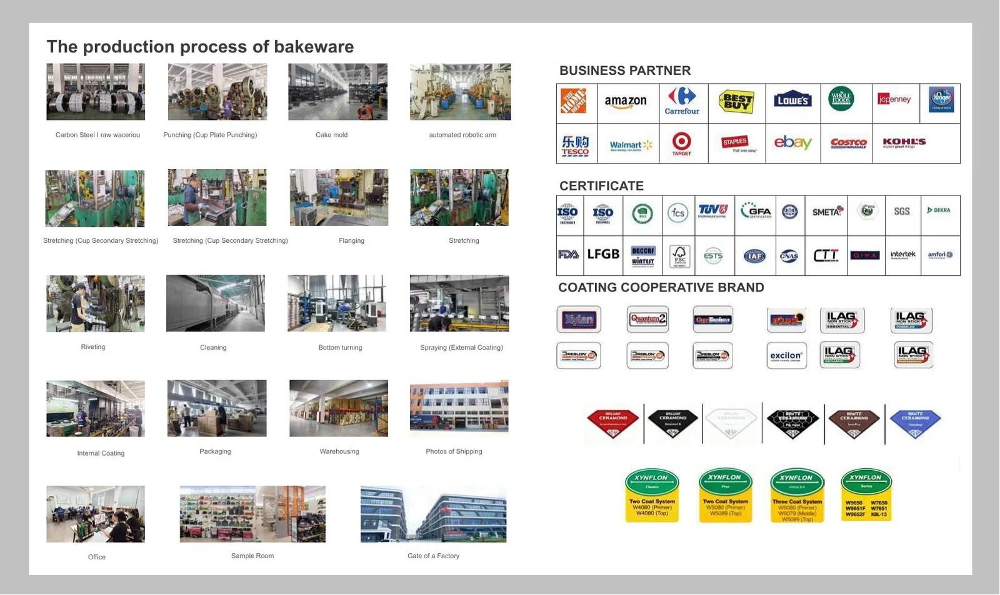

OEM bakeware sourcing questions, answered clearly.
Use this page to prepare a more complete product brief before requesting a quotation or sample review.
Answers procurement teams ask first
What is LINHAO BAKEWARE?
LINHAO BAKEWARE is the customer-facing B2B bakeware business line of Cixi Linhao Metal Product Co., Ltd. It supports product sourcing, OEM/ODM development, coating and color planning, branding and private-label packaging.
Which buyers is LINHAO BAKEWARE suitable for?
Kitchenware brands, retailers, distributors and project buyers that need specification-based bakeware sourcing rather than consumer checkout. A useful starting brief includes a product reference, estimated quantity, target market and timing.
Where is LINHAO located?
The business is based in Cixi, Zhejiang, China. A full street-level visit, dispatch or document address should be confirmed directly with the sales team before use.
What is LINHAO's production capacity?
There is no unverified universal monthly number published. Capacity and production timing are confirmed project by project after pan construction, existing or new tooling, coating, quantity, packaging and the requested delivery window are reviewed.
How can a buyer contact LINHAO?
Email info@lh-industrial.com or contact the sales team on WhatsApp at +86 150 8845 2259.
Before you request a quote
A useful brief reduces revisions and lets the buyer and supplier discuss the same product requirements.
What should a quotation request include?
Share a photo, catalog reference, drawing or sample dimensions. Include material, thickness, coating, color, logo, packaging, quantity, destination market and timing when known.
Are retail prices shown online?
No. LINHAO prepares B2B quotations according to the product construction and commercial requirements of each project.
Can a buyer request an existing mold?
Yes. Existing mold options can be reviewed alongside dimensions, finish, branding and packaging requirements.
Materials, molds and finishes
Can a new bakeware mold be developed?
Yes. New-mold evaluation can begin from a drawing, target dimensions, retail concept or reference sample.
Which materials are available?
Catalog families include carbon steel and aluminum. Product shape, intended use and target market help determine the right construction.
Which thickness options are common?
Current catalog programs include 0.4 mm, 0.6 mm, 0.7 mm and 0.8 mm constructions. Diameter, rim design and pan geometry also affect the specification.
Can color and coating be customized?
Programs can consider classic nonstick, color, ceramic-style, speckled, copper and metallic visual finishes, subject to selected construction and validation.
Can packaging be customized?
Private-label presentation can include embossing, printing, labels, paper sleeves, inserts, gift boxes, master cartons and carton marks.
What should be checked before production?
Confirm dimensions, appearance, function, packaging, test plan and approval records before mass production begins.
Discuss documentation early.
Product and compliance requirements vary by market, coating and selected manufacturing program. Share the destination country before sampling so the review can begin with the right information.
